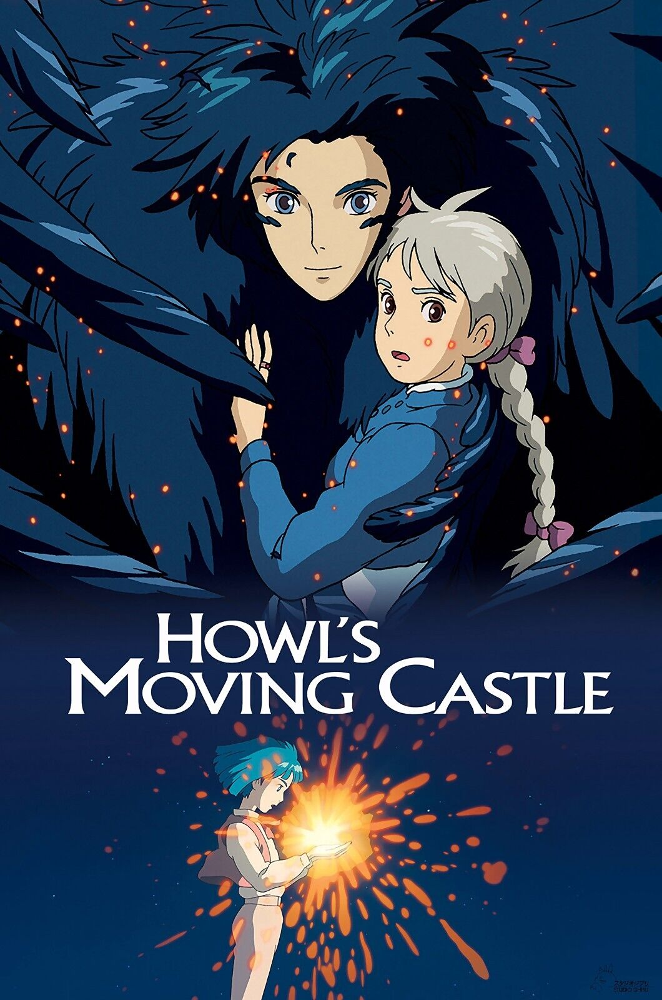

-
FOOD
This is my least favorite food. Sushi offers a wide range of flavors and textures, from the delicate taste of fresh fish to the tangy flavor of vinegar rice. There are many types of sushi, including nigiri, sashimi, and rolls, allowing for diverse combinations of ingredients.
-
MOVIE

This is my most favorite of all time. This movie Howl's Moving Castle shows us a relatable version of our reality, while allowing us to dream of a world where the selflessness of people encourages them to do the right thing. A world where people in power listen to reason, and even the worst villains can change for the better when shown compassion.
-
ACTOR
This is my most favorite Actor, Lee jong Suk. Because his striking visuals, diverse acting skills, ability to portray complex characters across various genres, and a charming personality that shines both on and off-screen.